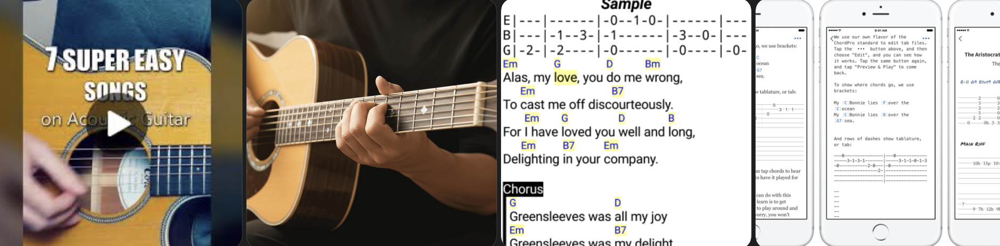
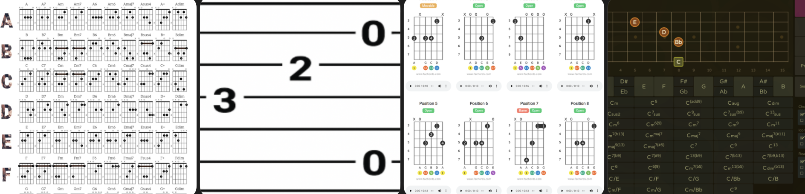
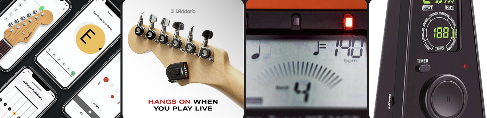
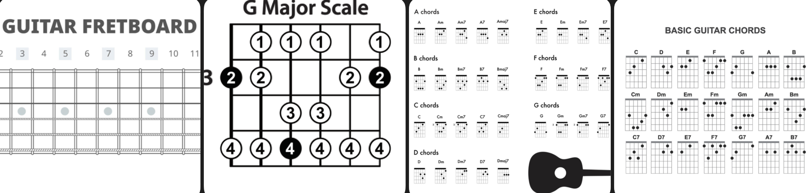
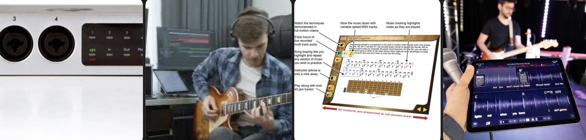

Structured Beginner Course
Why it matters: A clear step-by-step path prevents overwhelm and bad habits.
Look for:
- Logical lesson progression
- Chord changes + strumming basics
- Simple practice plans
- Play-along exercises
A simple set of tools to help you build skill fast without getting overwhelmed.
Why it matters: A clear step-by-step path prevents overwhelm and bad habits.
Look for:

Why it matters: Playing real songs keeps motivation high.
Look for:

Why it matters: Chords and tabs help you start playing immediately.
Look for:

Why it matters: Staying in tune and in time builds strong fundamentals.
Look for:

Why it matters: Understanding how chords and scales work speeds progress.
Focus on:

Why it matters: Playing along builds timing, confidence, and creativity.
Useful for: